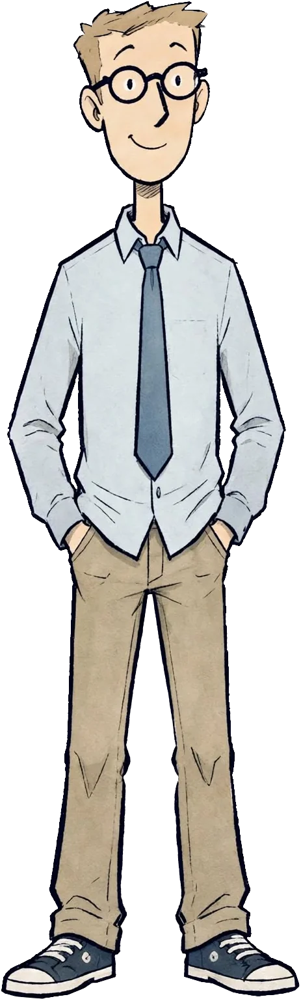
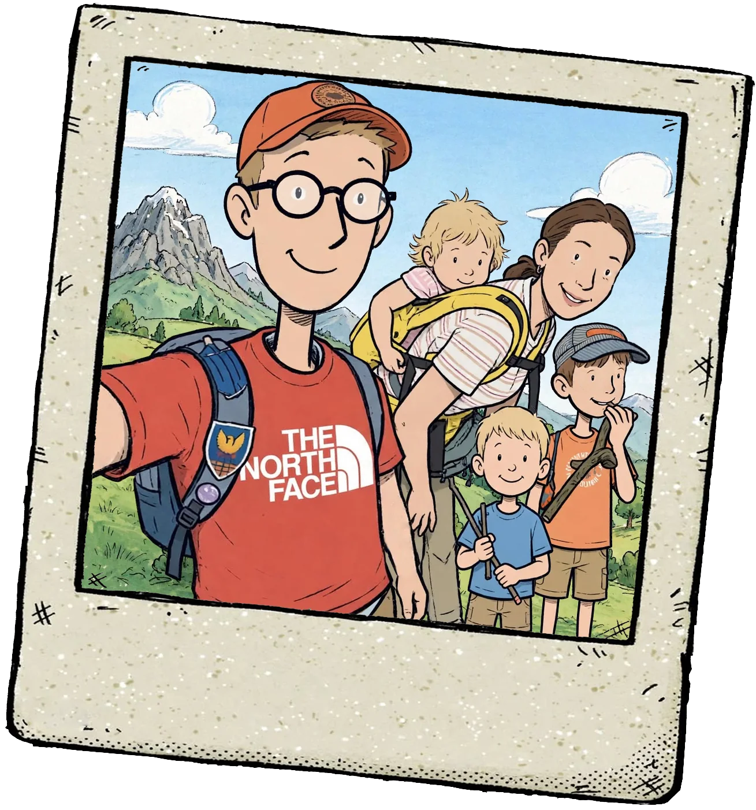
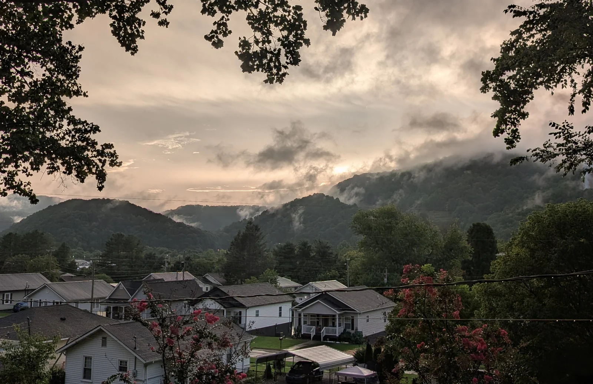
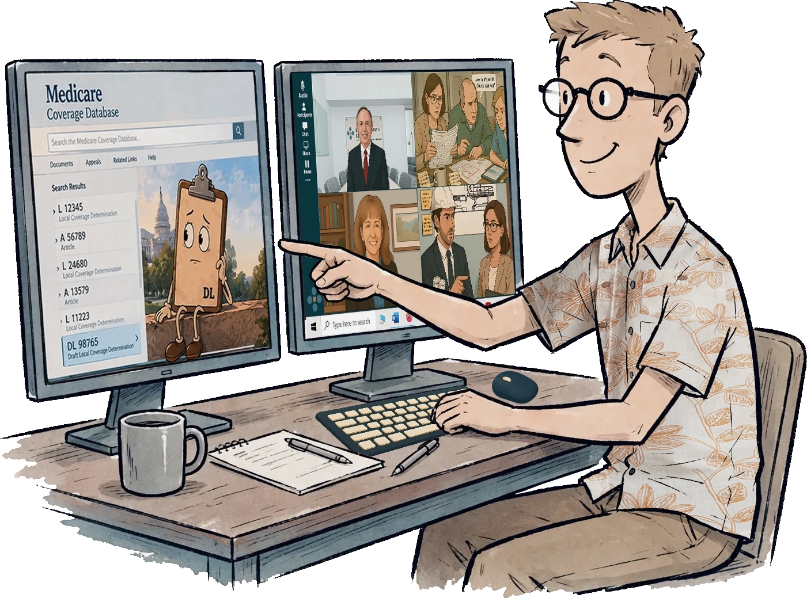
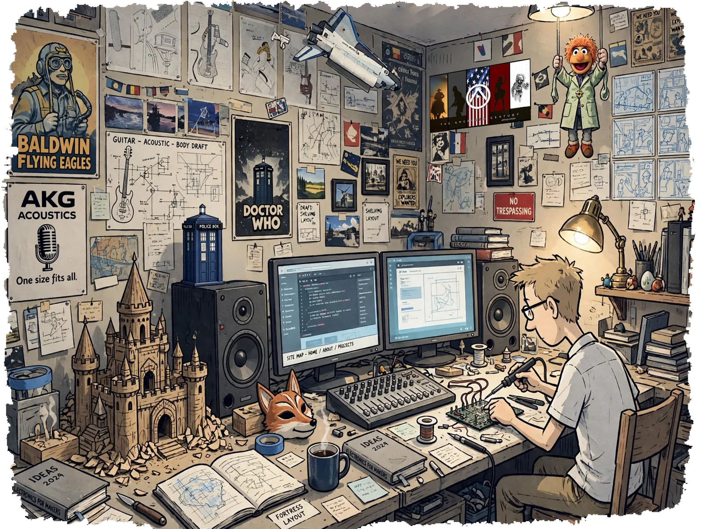
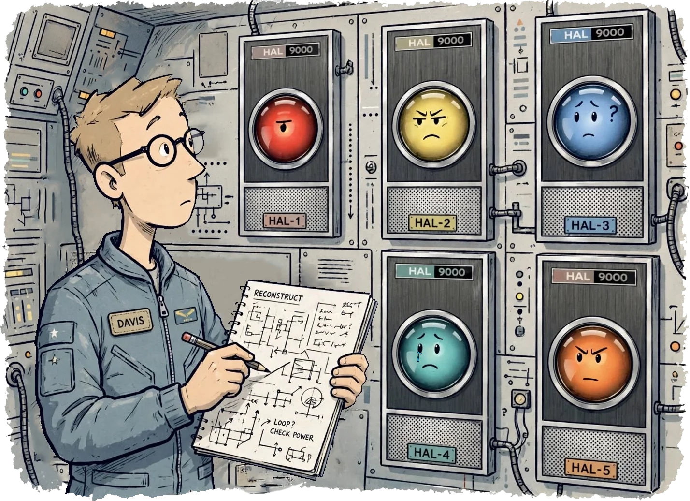

OCT 2025 — 2026
Master of Business Administration
Western Governors University
Accelerated track · Excellence Award, Ethical Leadership (October 2026)

Operations · Corporate Development · Design & Communications · Independent R&D
The domain changes. The job? Doesn’t.
I’m looking for the next problem that needs an owner.
Available March 2027. East Tennessee, remote, or hybrid with light travel.

I specialize in problems that don’t yet have clear ownership, language, or structure.
My best work happens in the space between the people who create systems and the people who have to operate within them. No established process. No clear owner. No agreement as to what the problem is.
A Medicare coverage determination and the nurse screening a patient against it. A proposed payment change and the program director trying to understand its impact. A physician at two in the morning deciding whether to go to the operating room, and the one-page reference that has to be right.
About Me

East Tennessee. I grew up in Unicoi County. When I was in fifth grade, my family moved to Johnson City, where I attended Science Hill High School. These days I’m back in Unicoi, living in Erwin with my wife Emily and our three kids.
Here, work gets done with your hands, your head, and your heart. And places eventually close. Between 2008 and 2014, I worked at a handful of places that shut their doors for good or ran out of work for me. Nobody here treats that as the end of the story.
You learn the next trade, take the next shift, and bring what you learned at the last job with you.
That’s East Tennessee. Not a place so much as a habit. When something closes, you figure out what’s next and get to work.


I’ve been hired at my dad’s company, Shared Health Services, three times.
The first was in 2009, as a draftsman. I laid out wound care and hyperbaric centers for newly contracted hospitals. The job ended when the work dried up.
The second was in 2015. I did maintenance, carpentry, more drafting, and designed new centers while working toward my Associate of Applied Science degree.
The third was October 2019, and it was supposed to be another temporary stopover. I’d finished my bachelor’s degree that August and wasn’t getting any callbacks. My first child was on the way, and I was driving an hour and a half each way to work twelve-hour weekend shifts in a heat-treat lab in Morristown.
Shared Health Services brought me on as a stopgap to help with HR and IT. Get a few certifications. Learn the family business. Be useful. Stay out of the way.
Then COVID hit. Half our contracts disappeared seemingly overnight. Three senior executives were let go, and the four of us remaining were left running a multi-state wound care company. Within a year, we were $250,000 in debt.
I ended up wearing not just the HR and IT hats. Budgeting and feasibility analysis. Compliance and performance reporting. Communications, content, web design, outreach, lead generation, data management, and internal process improvement. Corporate development.
Within two years, we were back in the black.
I drew the centers. Then I helped run the company behind them.
This site holds a fraction of what I built during that time, and in the years before and after.
A lot of the work I’ve done here had to function with me out of the way. Tools a hospital or physician practice partner can use without me in the treatment room. Marketing materials that go out under someone else’s name. A training platform that runs without somebody behind the curtain.
They’re different projects, but they share a practical requirement: somebody else has to be able to use what I build.
That’s the job.

I’ve been building things after hours since middle school, when a sixth-grade technical module introduced me to HTML and BASIC, and a seventh-grade shop class introduced me to technical drawing and building with my own two hands.
The projects keep accumulating. Bands, recording, and sound engineering. Computers assembled and coaxed into doing things they weren’t configured to do. Websites built to spec for bands, a novelist, and Emily’s and my furniture-restoration business. A website of my own that grew past 2,000 pages, each designed in Photoshop and hand-coded in Dreamweaver, with a boot sequence that behaves like a video game. A fantasy castle, hand-carved as my first son’s second Christmas present. Four years of writing and illustrating a weekly staff newsletter.
Recently, my passion has been conducting research.
In 2019, in the senior research project for my bachelor’s degree, I looked at predicting part non-conformity during the heat treatment process by utilizing historical data the plant was already collecting.
I’ve also published two specifications on semantic addressing, a Zenodo preprint in 2025 and an IETF Internet-Draft in 2026. No institution, no lab, no research funding. Just a problem I wanted to understand well enough to put a specification around it.
The idea is to send the address of a meaning instead of the meaning itself, for places where every bit costs something: disaster networks, failing infrastructure, deep space. Then I put the work in front of people qualified to challenge it.
None of it was anybody’s job and most of it was for somebody else anyway.

Artificial intelligence has reduced the time and cost required to move an idea from concept through research, prototyping, testing, deployment, and iteration. I resisted the help longer than I probably should have.
During COVID I was working 75–95 hour weeks to keep my dad’s company open. The only way to make that sustainable was to build systems that carried part of the load. The result wasn’t a harder week. It was a shorter one: roughly 52 hours.
I treat AI platforms less like ghostwriters and more like a room full of specialists who disagree with one another.
Before I ship anything, I run it through multiple AI platforms to challenge assumptions, explore alternatives, identify weaknesses, and stress-test ideas. By comparing competing perspectives and solution pathways, I can evaluate complex problems more thoroughly than a traditional linear workflow allows.
I then reconstruct the work by hand into something in my own voice.
The result is work that has been audited for logic and exposed to far more scrutiny than a typical first draft before it ever reaches anyone.
AI accelerates research, analysis, and critique. Precision, compliance, accountability, and execution remain my responsibility.
As you explore this site, you’ll find various pieces of my work that were created across different periods of my career and across very different technological environments. Some pieces predate the emergence of modern AI tools. Others were developed with AI-assisted research, critique, and iteration.
The tools in my toolbox have certainly changed. My underlying approach, however, did not. Every project here reflects my own judgment, standards, and way of thinking.
Western Governors University
Accelerated track · Excellence Award, Ethical Leadership (October 2026)
Concordia University Chicago — River Forest, Illinois
magna cum laude · GPA 3.95
Senior project: Creating a Way to Track Nonconforming Parts During the Heat Treatment Process — a research program proposing an algorithm over existing furnace data-acquisition systems to predict nonconformance before parts leave the line. Written while working the heat-treat lab floor it describes.
Northeast State Community College — Blountville, Tennessee
President’s Club, Fall 2015 and Spring 2016 — awarded for a 4.0 semester GPA
Tennessee Technology Center — Elizabethton, Tennessee